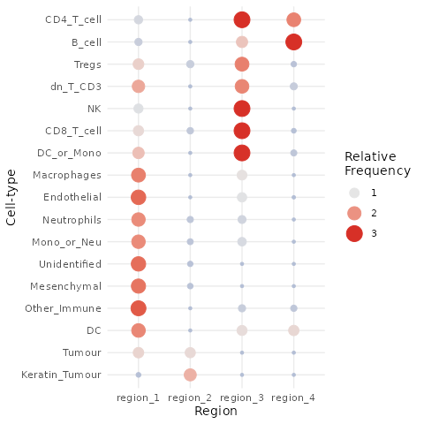
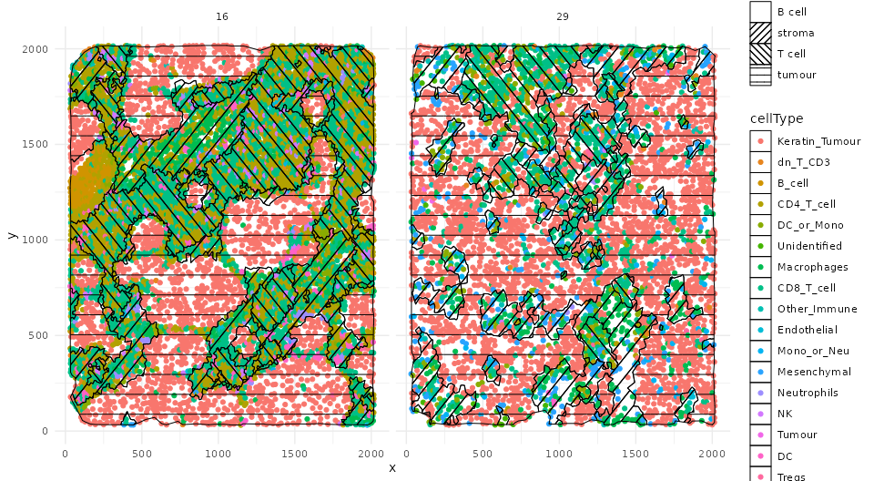
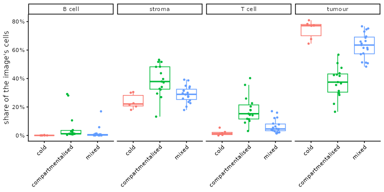
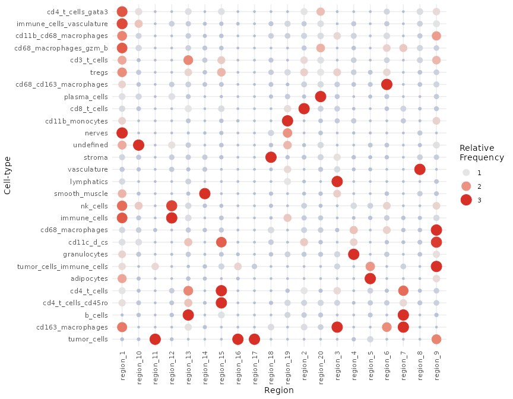
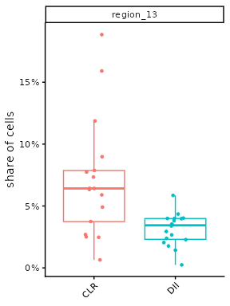

Introduction to lisaClust
Ellis Patrick
School of Mathematics and Statistics, and Westmead Institute for Medical Research, University of Sydney, AustraliaNicolas Canete
Westmead Institute for Medical Research, University of Sydney, AustraliaAlex Run Qin
School of Mathematics and Statistics, University of Sydney, Australia9 October 2026
Source:vignettes/lisaClust.Rmd
lisaClust.RmdAbstract
Which parts of a tumour are tumour cells, which are immune infiltrate and which are stroma? Which local neighbourhoods of cells are more common in one group of patients than another? lisaClust describes, for every cell, which cell types surround it, and groups cells with similar surroundings into regions. With a few regions these are tissue domains; with many they are cellular niches. This vignette finds domains in triple-negative breast cancers and niches in colorectal cancers, and compares them between groups of patients.
Introduction
For each cell, lisaClust (Patrick et al. 2023) counts the cells of every type within a few radii of it and compares each count with what would be expected if that type were spread evenly over the image. These local indicators of spatial association (LISA) describe the cell’s surroundings: a tumour cell deep in a tumour nest has many tumour neighbours and few immune neighbours, while a tumour cell at the invasive margin has both. Clustering the cells by their LISA groups cells with similar surroundings, whatever their own type, into regions.
The number of regions sets the scale of the question. With a few regions, they are broad tissue domains, such as tumour, stroma and immune infiltrate. With 20 or more, they are cellular niches: recurring local combinations of cell types, such as T cells mixed with macrophages at a tumour border.
lisaClust needs only the type and position of every cell, so it applies to any technology that gives segmented, typed cells: spatial proteomics such as imaging mass cytometry, MIBI and CODEX, and spatial transcriptomics such as Xenium, CosMx, MERSCOPE or high-definition spatial transcriptomics (Patrick et al. 2023). It is not designed for spot-based data such as Visium, where a spot holds several cells. It works alongside other SydneyBioX packages: spicyR tests whether pairs of cell types co-localise differently between groups of patients, and Statial tests co-localisation within tissue compartments.
Installation
if (!requireNamespace("BiocManager", quietly = TRUE)) install.packages("BiocManager")
BiocManager::install("lisaClust")Tissue domains in triple-negative breast cancer
The data
Keren et al. (2018) imaged tumours from
40 patients with triple-negative breast cancer by MIBI-TOF, one image
per patient, and classified each tumour by how its immune and tumour
cells are arranged: compartmentalised, where immune cells and
tumour cells occupy separate areas; mixed, where they are
interspersed; and cold, with few immune cells. The data are a
SpatialExperiment in the SpatialDatasets package, with the
coordinates in pixels.
kerenSPE <- spe_Keren_2018()
patients <- unique(as.data.frame(colData(kerenSPE))[, c("imageID", "tumour_type")])
table(patients$tumour_type)
#>
#> cold compartmentalised mixed
#> 6 15 19
sort(table(kerenSPE$cellType), decreasing = TRUE)
#>
#> Keratin_Tumour Macrophages CD8_T_cell CD4_T_cell B_cell
#> 99487 20616 15698 12438 9115
#> Mesenchymal Other_Immune DC_or_Mono dn_T_CD3 Tumour
#> 8170 6891 5049 3848 3167
#> Mono_or_Neu Neutrophils Endothelial Unidentified Tregs
#> 3110 3018 2086 1725 1341
#> DC NK
#> 1245 674Finding domains
lisaClust() computes the LISA of every cell and clusters
them with k-means into k regions, stored in a new
colData column (region by default). It looks
for columns called imageID and cellType, and
takes the coordinates of a SpatialExperiment from
spatialCoords(). Here we ask for four domains, describing
each cell’s surroundings within 20, 50 and 100 pixels.
set.seed(51773)
kerenSPE <- lisaClust(kerenSPE, k = 4, r = c(20, 50, 100))
table(kerenSPE$region)
#>
#> region_1 region_2 region_3 region_4
#> 62148 104863 23516 7151k-means starts from random centres, so set a seed to make the regions reproducible.
What is in each domain?
regionMap() shows how much more often each cell type is
found in each region than if cell types were spread evenly over the
regions: above one, the type is enriched in that region.
regionMap(kerenSPE, type = "bubble")
The regions are numbered arbitrarily, so we name each one by the cell type it is most enriched for, among tumour cells, CD8 T cells, B cells and mesenchymal cells.
tab <- table(kerenSPE$cellType, kerenSPE$region)
enrichment <- tab / outer(rowSums(tab), colSums(tab)) * sum(tab)
markers <- c(tumour = "Keratin_Tumour", `T cell` = "CD8_T_cell", `B cell` = "B_cell", stroma = "Mesenchymal")
domainOf <- setNames(names(markers)[apply(enrichment[markers, ], 2, which.max)], colnames(enrichment))
domainOf
#> region_1 region_2 region_3 region_4
#> "stroma" "tumour" "T cell" "B cell"
kerenSPE$domain <- domainOf[kerenSPE$region]
round(100 * prop.table(table(kerenSPE$domain)), 1)
#>
#> B cell stroma T cell tumour
#> 3.6 31.4 11.9 53.0The cell types most enriched in each domain:
sapply(split(names(domainOf), domainOf), function(r) {
e <- rowMeans(enrichment[, r, drop = FALSE])
paste(names(sort(e, decreasing = TRUE))[1:4], collapse = ", ")
})
#> B cell
#> "B_cell, CD4_T_cell, DC, dn_T_CD3"
#> stroma
#> "Other_Immune, Endothelial, Unidentified, Mesenchymal"
#> T cell
#> "CD4_T_cell, NK, CD8_T_cell, DC_or_Mono"
#> tumour
#> "Keratin_Tumour, Tumour, Tregs, CD8_T_cell"Domains in two tumours
hatchingPlot() draws the cells coloured by type, with
each region outlined and filled with its own hatching, so types and
regions can be seen together. Here are the compartmentalised tumour and
the mixed tumour with the most cells in the T cell domain.
domainShare <- prop.table(table(kerenSPE$imageID, kerenSPE$domain), 1)
type <- patients$tumour_type[match(rownames(domainShare), patients$imageID)]
examples <- sapply(c("compartmentalised", "mixed"), function(t) {
im <- rownames(domainShare)[type == t]
im[which.max(domainShare[im, "T cell"])]
})
examples
#> compartmentalised mixed
#> "16" "29"
hatchingPlot(kerenSPE, useImages = examples, region = "domain", nbp = 200)
Do the domains differ between kinds of tumour?
Each patient has one image, so the share of each domain in an image is a value per patient.
shares <- data.frame(imageID = rep(rownames(domainShare), ncol(domainShare)),
domain = rep(colnames(domainShare), each = nrow(domainShare)),
share = as.vector(domainShare))
shares$tumour_type <- patients$tumour_type[match(shares$imageID, patients$imageID)]
ggplot(shares, aes(tumour_type, share, colour = tumour_type)) +
geom_boxplot(outlier.shape = NA) +
geom_jitter(width = 0.15, height = 0, size = 1) +
facet_wrap(~ domain, nrow = 1) +
scale_y_continuous(labels = function(v) paste0(100 * v, "%")) +
labs(x = NULL, y = "share of the image's cells") +
theme(legend.position = "none", axis.text.x = element_text(angle = 45, hjust = 1))
tcell <- domainShare[, "T cell"]
medians <- tapply(tcell, type, median)
round(100 * medians, 1)
#> cold compartmentalised mixed
#> 1.3 15.2 4.5
pT <- wilcox.test(tcell[type == "compartmentalised"], tcell[type == "mixed"])$p.value
pT
#> [1] 9.138522e-05The T cell domain makes up a median of 15.2% of the cells in a compartmentalised tumour and 4.5% in a mixed one (Wilcoxon p = 9.1e-05). In compartmentalised tumours the immune cells form their own areas, which become a domain; in mixed tumours they sit among the tumour cells and fall into the tumour domain.
Keren et al. (2018) classified the tumours from how their immune and tumour cells are arranged, so this difference is a check that the domains capture that arrangement, not an independent finding.
Cellular niches in colorectal cancer
The data
Schürch et al.
(2020) imaged colorectal cancers from 35 patients by CODEX, four
tissue microarray cores per patient. The patients had one of two
patterns of immune response: a Crohn’s-like reaction (CLR, with lymphoid
follicles; 17 patients) or diffuse inflammatory infiltration (DII; 18
patients). We leave out the objects the authors labelled as debris
(dirt).
schurchSPE <- spe_Schurch_2020()
schurchSPE <- schurchSPE[, schurchSPE$cellType != "dirt"]
schurchSPE$condition <- factor(ifelse(schurchSPE$group == 1, "CLR", "DII"))
table(unique(as.data.frame(colData(schurchSPE))[, c("patients", "condition")])$condition)
#>
#> CLR DII
#> 17 18
length(unique(schurchSPE$cellType))
#> [1] 28Finding niches
With 20 regions, the regions are finer combinations of cell types. We
store them in a column called niche.
set.seed(51773)
schurchSPE <- lisaClust(schurchSPE, k = 20, r = c(20, 50, 100), regionName = "niche")
regionMap(schurchSPE, region = "niche", type = "bubble") +
theme(axis.text.x = element_text(angle = 90, vjust = 0.5, hjust = 1))
Comparing niches between groups of patients
The question is whether a niche makes up more of the tissue in one group of patients than in the other. The four cores of a patient come from the same tumour, so they are not independent: we pool the cells of each patient’s cores, so that each patient contributes one share of each niche, and compare the two groups of patients. With 20 niches tested, the p-values are adjusted for multiple testing.
cd <- as.data.frame(colData(schurchSPE))
byPatient <- prop.table(table(cd$patients, cd$niche), 1)
groupOf <- unique(cd[, c("patients", "condition")])
group <- groupOf$condition[match(rownames(byPatient), groupOf$patients)]
nicheTest <- function(share, group) {
p <- apply(share, 2, function(v) wilcox.test(v[group == "CLR"], v[group == "DII"], exact = FALSE)$p.value)
data.frame(niche = colnames(share),
CLR = apply(share[group == "CLR", , drop = FALSE], 2, median),
DII = apply(share[group == "DII", , drop = FALSE], 2, median),
p_value = p, p_adj = p.adjust(p, "BH"))
}
patientTests <- nicheTest(byPatient, group)
head(patientTests[order(patientTests$p_value), ], 5)
#> niche CLR DII p_value p_adj
#> region_13 region_13 0.064181874 0.034373672 0.002266000 0.02667551
#> region_7 region_7 0.015971606 0.001893183 0.002667551 0.02667551
#> region_11 region_11 0.025140491 0.053914772 0.005288485 0.03525657
#> region_4 region_4 0.031240960 0.048529593 0.009572918 0.04786459
#> region_5 region_5 0.005341982 0.002529402 0.021762678 0.08705071
byCore <- prop.table(table(cd$imageID, cd$niche), 1)
coreGroup <- unique(cd[, c("imageID", "condition")])
coreTests <- nicheTest(byCore, coreGroup$condition[match(rownames(byCore), coreGroup$imageID)])
c(patients = sum(patientTests$p_adj < 0.05), cores = sum(coreTests$p_adj < 0.05))
#> patients cores
#> 4 4With the 35 patients as the units, 4 niches differ between CLR and DII patients at a 5% false discovery rate (smallest adjusted p-value 0.027). Treating each of the 140 cores as an independent sample instead, 4 niches differ, with a smallest adjusted p-value of 0.00087.
Cores or images from the same patient are alike, so treating them as independent overstates the evidence and can turn up differences that the patients do not support. Compare niches with patients as the units, and adjust for the number of niches tested.
top <- patientTests$niche[which.min(patientTests$p_value)]
nicheTab <- table(cd$cellType, cd$niche)
nicheEnrichment <- nicheTab / outer(rowSums(nicheTab), colSums(nicheTab)) * sum(nicheTab)
round(sort(nicheEnrichment[, top], decreasing = TRUE)[1:5], 1)
#> b_cells cd4_t_cells cd3_t_cells cd11c_d_cs
#> 8.3 2.1 2.1 1.4
#> cd4_t_cells_cd45ro
#> 1.4The niche with the smallest p-value, region_13, is most enriched for b_cells, cd4_t_cells, cd3_t_cells. It makes up a median of 6.4% of the cells in CLR patients and 3.4% in DII patients, as expected for the lymphoid follicles that define a Crohn’s-like reaction:
ggplot(data.frame(share = byPatient[, top], group = group), aes(group, share, colour = group)) +
geom_boxplot(outlier.shape = NA) +
geom_jitter(width = 0.15, height = 0, size = 1.5) +
scale_y_continuous(labels = function(v) paste0(100 * v, "%")) +
labs(x = NULL, y = paste("share of", top)) +
theme(legend.position = "none")
Using your own clustering
lisa() returns the LISA themselves, one row per cell and
one column per radius and cell type, so you can cluster them any way you
like.
curves <- lisa(kerenSPE[, kerenSPE$imageID %in% examples], r = c(20, 50, 100))
dim(curves)
#> [1] 13031 51
curves[1:3, 1:4]
#> 20_Keratin_Tumour 20_CD8_T_cell 20_dn_T_CD3 20_CD4_T_cell
#> cell_1 3.7228902 -0.8831332 -0.2041394 -0.8778542
#> cell_2 -0.7323238 5.5545686 -0.2041394 -0.8778542
#> cell_3 -0.7323238 5.4766730 -0.2041394 -0.8778542
# for example, k-means with several random starts
set.seed(51773)
km <- kmeans(curves, centers = 4, nstart = 10, iter.max = 50)
table(km$cluster)
#>
#> 1 2 3 4
#> 5466 1362 6043 160Choosing the settings
The number of regions. A few regions describe the
large compartments of a tissue; many regions separate finer
neighbourhoods but split rarer combinations across several regions and
make each one harder to interpret. Look at regionMap() for
a few values of k and choose the coarsest one that
separates the structures you care about; generic rules for the number of
clusters, such as the elbow or silhouette, can merge tissue structures
that are known to be distinct (Patrick et al.
2023).
The radii. Choose them from the scales of
interaction you expect, in the units of the coordinates: a radius of two
or three cell diameters describes the cell’s immediate neighbours, and
larger radii describe its wider surroundings. Several radii
(r) are used together; run time grows with the number and
size of the radii, so a few well-chosen ones are better than many.
Uneven cell density. By default the expected count
assumes cells are spread evenly over the image. With sigma,
each neighbour is weighted by the inverse of the local density of all
cells, estimated with a Gaussian kernel of bandwidth sigma,
so that a dense area does not by itself look enriched for every cell
type.
How it works
For cell i, cell type j and radius r, let nij(r) be the number of cells of type j within r of cell i, counting cell i itself when it is of type j. If the cells of type j were spread evenly over the image window W, with density , the expected count would be
where is the share of the disc of radius r around cell i that lies inside the window, which corrects for cells near the edge. The LISA is the standardised difference
a local version of Ripley’s K function for the pair
(lisaFunc = "L" gives
instead). The window is the convex hull of the image’s cells by default
(window). The neighbour search and the edge correction run
in C++, so the LISA of hundreds of thousands of cells take seconds.
Reporting results
A methods sentence might read: “We used lisaClust (version 1.21.2) to
compute, for each cell, local indicators of spatial association with
every cell type at radii of 20, 50 and 100 pixels, and clustered the
cells into 20 niches by k-means. The share of each niche in each patient
was compared between groups with a Wilcoxon test, with patients as the
units, and p-values were adjusted across niches by the
Benjamini–Hochberg method.” Show regionMap() and a
hatchingPlot() of example images with the results.
citation("lisaClust")
#> To cite package 'lisaClust' in publications use:
#>
#> Patrick E, Canete NP, Iyengar SS, Harman AN, Sutherland GT, Yang P
#> (2023). "Spatial analysis for highly multiplexed imaging data to
#> identify tissue microenvironments." _Cytometry Part A_, *103*,
#> 593-599. doi:10.1002/cyto.a.24729
#> <https://doi.org/10.1002/cyto.a.24729>.
#>
#> A BibTeX entry for LaTeX users is
#>
#> @Article{,
#> title = {Spatial analysis for highly multiplexed imaging data to identify tissue microenvironments},
#> author = {Ellis Patrick and Nicolas P. Canete and Sourish S. Iyengar and Andrew N. Harman and Greg T. Sutherland and Pengyi Yang},
#> journal = {Cytometry Part A},
#> volume = {103},
#> pages = {593--599},
#> year = {2023},
#> doi = {10.1002/cyto.a.24729},
#> }Session information
sessionInfo()
#> R version 4.6.1 (2026-06-24)
#> Platform: x86_64-pc-linux-gnu
#> Running under: Ubuntu 24.04.5 LTS
#>
#> Matrix products: default
#> BLAS: /usr/lib/x86_64-linux-gnu/openblas-pthread/libblas.so.3
#> LAPACK: /usr/lib/x86_64-linux-gnu/openblas-pthread/libopenblasp-r0.3.26.so; LAPACK version 3.12.0
#>
#> locale:
#> [1] LC_CTYPE=C.UTF-8 LC_NUMERIC=C LC_TIME=C.UTF-8
#> [4] LC_COLLATE=C.UTF-8 LC_MONETARY=C.UTF-8 LC_MESSAGES=C.UTF-8
#> [7] LC_PAPER=C.UTF-8 LC_NAME=C LC_ADDRESS=C
#> [10] LC_TELEPHONE=C LC_MEASUREMENT=C.UTF-8 LC_IDENTIFICATION=C
#>
#> time zone: UTC
#> tzcode source: system (glibc)
#>
#> attached base packages:
#> [1] stats4 stats graphics grDevices utils datasets methods
#> [8] base
#>
#> other attached packages:
#> [1] ggplot2_4.0.3 SpatialDatasets_1.10.0
#> [3] ExperimentHub_3.2.2 AnnotationHub_4.2.2
#> [5] BiocFileCache_3.2.0 dbplyr_2.6.0
#> [7] SpatialExperiment_1.22.0 SingleCellExperiment_1.34.0
#> [9] SummarizedExperiment_1.42.0 Biobase_2.72.0
#> [11] GenomicRanges_1.64.0 Seqinfo_1.2.0
#> [13] IRanges_2.46.0 S4Vectors_0.50.3
#> [15] BiocGenerics_0.58.1 generics_0.1.4
#> [17] MatrixGenerics_1.24.0 matrixStats_1.5.0
#> [19] lisaClust_1.21.2 BiocStyle_2.40.0
#>
#> loaded via a namespace (and not attached):
#> [1] DBI_1.3.0 deldir_2.0-4 httr2_1.3.0
#> [4] rlang_1.3.0 magrittr_2.0.5 otel_0.2.0
#> [7] compiler_4.6.1 RSQLite_3.53.3 spatstat.geom_3.8-3
#> [10] png_0.1-9 systemfonts_1.3.2 vctrs_0.7.3
#> [13] pkgconfig_2.0.3 crayon_1.5.3 fastmap_1.2.0
#> [16] magick_2.9.1 XVector_0.52.0 labeling_0.4.3
#> [19] rmarkdown_2.32 ragg_1.5.2 purrr_1.2.2
#> [22] bit_4.6.0 xfun_0.61 cachem_1.1.0
#> [25] jsonlite_2.0.0 goftest_1.2-3 blob_1.3.0
#> [28] DelayedArray_0.38.2 spatstat.utils_3.2-5 BiocParallel_1.46.0
#> [31] parallel_4.6.1 R6_2.6.1 bslib_0.12.0
#> [34] RColorBrewer_1.1-3 spatstat.data_3.1-9 spatstat.univar_3.2-0
#> [37] jquerylib_0.1.4 Rcpp_1.1.2 bookdown_0.48
#> [40] knitr_1.52 tensor_1.5.1 Matrix_1.7-5
#> [43] tidyselect_1.2.1 abind_1.4-8 yaml_2.3.12
#> [46] codetools_0.2-20 spatstat.random_3.5-2 spatstat.explore_3.8-3
#> [49] curl_8.0.0 lattice_0.22-9 tibble_3.3.1
#> [52] withr_3.0.3 KEGGREST_1.52.2 S7_0.2.2
#> [55] evaluate_1.0.5 desc_1.4.3 polyclip_1.10-7
#> [58] Biostrings_2.80.2 pillar_1.11.1 BiocManager_1.30.27
#> [61] filelock_1.0.3 BiocVersion_3.23.1 scales_1.4.0
#> [64] glue_1.8.1 pheatmap_1.0.13 tools_4.6.1
#> [67] fs_2.1.0 grid_4.6.1 AnnotationDbi_1.74.0
#> [70] nlme_3.1-169 cli_3.6.6 spatstat.sparse_3.2-0
#> [73] rappdirs_0.3.4 textshaping_1.0.5 S4Arrays_1.12.1
#> [76] dplyr_1.2.1 concaveman_1.2.0 V8_8.2.0
#> [79] gtable_0.3.6 sass_0.4.10 digest_0.6.39
#> [82] SparseArray_1.12.3 rjson_0.2.23 farver_2.1.2
#> [85] memoise_2.0.1 htmltools_0.5.9 pkgdown_2.2.1
#> [88] lifecycle_1.0.5 httr_1.4.9 bit64_4.8.6